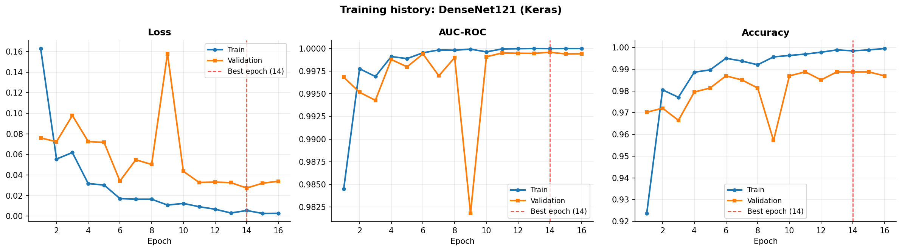
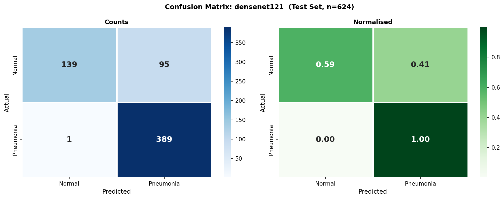
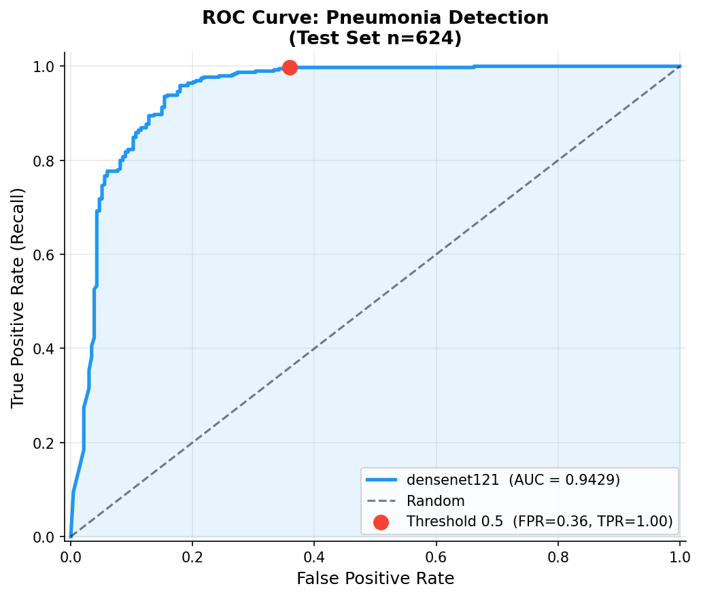
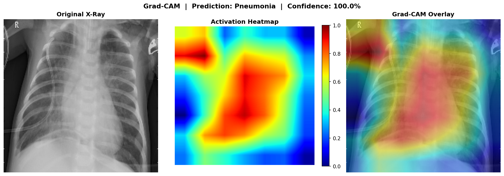
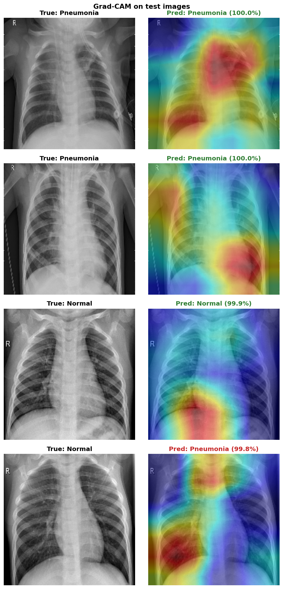
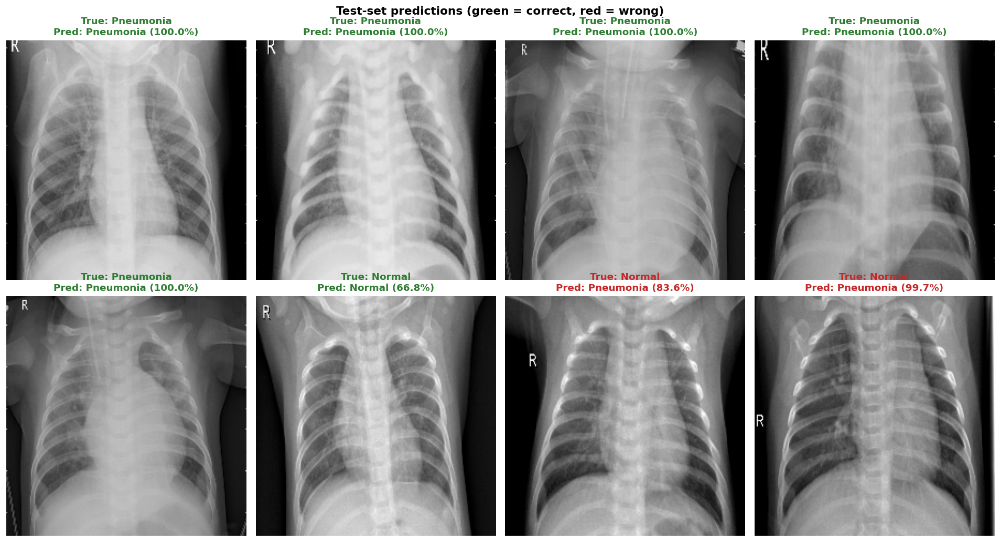

A DenseNet121 model that classifies chest X-rays as Normal or Pneumonia, built with TensorFlow/Keras, with Grad-CAM heatmaps that show where the model is looking.
Measured on the untouched 624-image test split after training on a Colab T4 GPU (default 0.5 threshold).
Cosine learning-rate schedule with early stopping (patience = 5). Loss, AUC and accuracy across epochs.

In medical screening the costliest error is a false negative, a missed pneumonia case. There is only one here.


A model can be right for the wrong reasons. Grad-CAM overlays a heatmap of the regions that drove the prediction, so you can sanity-check that it's attending to lung tissue rather than edges, text, or the spine.



DenseNet121 is the backbone behind CheXNet (Rajpurkar et al., 2017), which reached radiologist-level performance on chest X-ray classification. Its dense skip connections let gradients flow cleanly to early layers and help the network pick up the fine-grained texture differences in lung tissue. A ResNet50 backbone is also supported for a faster alternative.
Kaggle — Chest X-Ray Images (Pneumonia), originally from Guangzhou Women and Children's Medical Center. Because the original validation split has only 16 images, data/prepare_data.py reserves 10% of the training set for validation.
| Split | Normal | Pneumonia | Total |
|---|---|---|---|
| Train | 1,207 | 3,488 | 4,695 |
| Validation | 142 | 395 | 537 |
| Test | 234 | 390 | 624 |
Full instructions are in the repository README. The short version:
# 1 · Install dependencies pip install -r requirements.txt # 2 · Download the dataset (needs a Kaggle account) kaggle datasets download -d paultimothymooney/chest-xray-pneumonia unzip chest-xray-pneumonia.zip -d data/raw/ python data/prepare_data.py # 3 · Train python main.py --mode train # 4 · Predict on a single X-ray (+ Grad-CAM) python main.py --mode predict --checkpoint outputs/models/best_model.keras --image path/to/xray.jpg # No data handy? Run the smoke test: python main.py